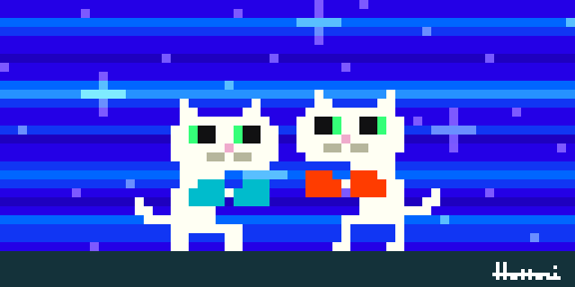

<form>
<input name="button2" type="button" onClick="myEnter()" value="秘密のページはここ！">
<br>

</form></blockquote>


<script language="JavaScript">
<!--

function myEnter(){
  Input=window.prompt("あなたはわたしの？","");
  if ( Input == "あいぼう" ) location.href="home.html";
  else alert( "いつも言ってるやつだよ！" );
}

// -->
</script>
